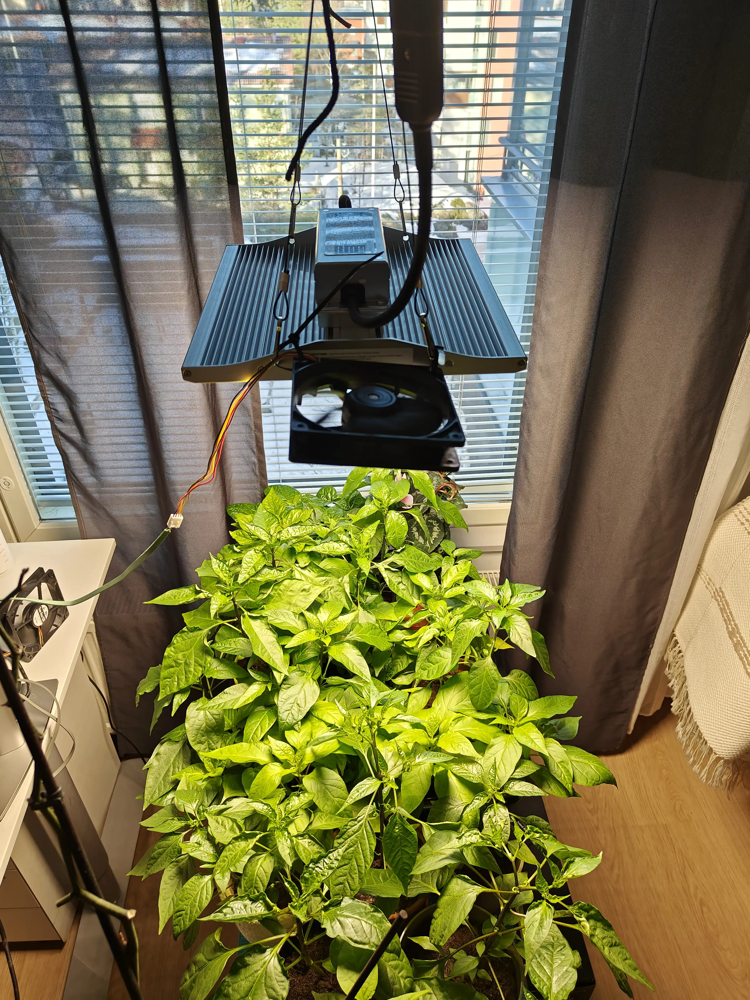

As a culinary enthusiast with a penchant for fiery flavors, my love for hot sauces has always been an integral part of my culinary adventures. However, with a limited selection of hot peppers available in most stores, I was inspired to embark on a journey to cultivate my own garden of scorching delights. Growing hot peppers has not only become a hobby but also a passion that has transformed my homemade fermented hot sauces into something truly extraordinary. 
It all started with a simple desire to create unique, mouthwatering fermented hot sauces. As an avid fan of spicy food, I yearned for more variety and control over the ingredients I used in my creations. The store-bought hot peppers, though sometimes satisfactory, were often far from the full spectrum of heat and flavor I craved. This realization led me to explore the diverse world of Capsicum and delve into the art of growing hot peppers.
Growing hot peppers has opened my eyes to an incredibly diverse universe of colors, flavors, and heat levels. Ranging from mild and sweet to scorching hot, the Capsicum genus encompasses over 50,000 varieties. Among the most popular are the Jalapeño, Habanero, and the legendary Carolina Reaper. However, the world of hot peppers extends far beyond these familiar names. From the smoky Chipotle to the fruity Fatalii, each variety offers a unique blend of heat and flavor to elevate my fermented hot sauces.
Growing hot peppers requires patience, dedication, and a willingness to learn. From germinating seeds and providing the right nutrients to managing pests and diseases, each stage of the process is a labor of love. The reward for this hard work, however, is an impressive collection of homegrown peppers that boast unmatched freshness and flavor.
Each pepper variety has its own specific needs, but some general principles apply to all. The process begins with selecting the right seeds and ensuring they have the proper germination conditions. As the seedlings grow, they require careful attention to lighting, temperature, and watering. As the plants mature, they must be gradually acclimated to outdoor conditions before finally being transplanted into the garden or containers.
My hobby of growing hot peppers has had a profound impact on my fermented hot sauces. With access to a wide variety of homegrown peppers, I can now experiment with unique combinations and flavors that were previously unattainable. My hot sauces have become more than just condiments; they are a reflection of my passion and dedication to the craft.
From selecting the perfect blend of peppers to fermenting them with high-quality ingredients, each step in the process is infused with care and attention to detail. The result is a collection of distinctive, mouthwatering hot sauces that showcase the beauty and versatility of the Capsicum genus.
Growing hot peppers has transformed my culinary experiences and deepened my appreciation for the art of fermentation. As I continue to explore the world of Capsicum, I am excited to discover new varieties, refine my growing techniques, and share my passion for heat with others through my ever-evolving fermented hot sauces.